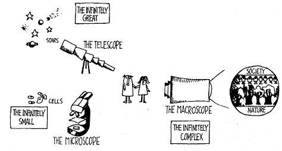

THE
MACROSCOPE: A NEW WORLD SCIENTIFIC SYSTEM.
de Rosnay,
Joël
Microscopio ,
telescopio : estas palabras evocan las grandes penetraciones
científicas de lo infinitamente pequeño y lo
infinitamente grande . El microscopio ha permitido una caída
vertiginosa en las profundidades de la materia viva , que ha hecho
posible el descubrimiento de la célula , los microbios y los
virus , permitió de la biología y la medicina. El
telescopio ha abierto la mente a la inmensidad del cosmos, ha
seguido la trayectoria de los planetas y las estrellas y ha
preparado a los hombres para la conquista del espacio
.
Hoy nos enfrentamos
con otro infinito: lo infinitamente complejo. Estamos confundidos
por el número y la variedad de elementos, de relaciones, de
interacciones y combinaciones de las funciones de las que los
grandes sistemas dependen. Nosotros mismos somos una pequeña
parte, somos las células de grandes sistemas, nos sentimos
confundidos por la interdependencia y el dinamismo de los sistemas,
los que se transforman en el mismo momento que los estudiamos.
Tenemos que ser capaces de entenderlos mejor, a fin de orientarlos
mejor. Y esta vez no tenemos instrumentos para esto. No tenemos
más que nuestro cerebro - nuestra inteligencia y nuestra
razón - para atacar a la inmensa complejidad de la vida y la
sociedad. Es cierto que la computadora es un instrumento
indispensable, sin embargo, es sólo un catalizador, no es
más que una herramienta muy necesaria.
Necesitamos, pues,
un nuevo instrumento. El microscopio y el telescopio han sido
valiosos en la recopilación de los conocimientos
científicos sobre el universo. Ahora, se necesita una nueva
herramienta para todos aquellos que tratan de entender y dirigir
eficazmente sus acciones en este mundo, ya que son responsables de
las decisiones más importantes en la política, en la
ciencia y en la industria o son personas comunes como
nosotros.
Voy a llamar a este
instrumento, el macroscopio (de macro, grande, y skopein , observar
) .
El macroscopio es
diferente a otras herramientas. Se trata de un instrumento
simbólico hecho de un número de métodos y
técnicas tomadas de muy diferentes disciplinas. Sería
inútil buscar en los laboratorios y centros de
investigación , sin embargo, un sinnúmero de personas lo
utilizan hoy en día en los más variados campos. El
macroscopio puede considerarse el símbolo de una nueva forma
de ver, entender y actuar.

Usemos el
macroscopio para dirigir una nueva mirada a la naturaleza , la
sociedad y el hombre y para tratar de identificar las nuevas reglas
de la educación y la acción. En su campo de visión
organizaciones , eventos y evoluciones son iluminados por una luz
totalmente diferente. El macroscopio filtra detalles y amplifica
los enlaces que unen las cosas. No se utiliza para hacer las cosas
más grandes o más pequeñas, sino para observar lo
que es a la vez demasiado grande, demasiado lento y demasiado
complejo para nuestros ojos (la sociedad humana, por ejemplo, es un
organismo gigantesco que es totalmente invisible para nosotros).
Anteriormente , en el intento de comprender un sistema complejo ,
buscamos las unidades más simples que explican la materia y la
vida: la molécula, átomo, las partículas
elementales. Hoy en día, en relación con la sociedad,
nosotros somos las partículas. Esta vez nuestra mirada debe
estar dirigida a los sistemas que nos rodean con el fin de entender
mejor antes de que los efectos sean irreversibles. Los papeles se
invierten: ya no es el biólogo que observa una célula
viva a través de un microscopio, es la propia célula que
observa en el macroscopio el organismo que los cobija.
This work was first
published in France under the title Le Macroscope. Vers une vision
globale. © Editions du Seuil, 1975.
THE MACROSCOPE: A
NEW WORLD SCIENTIFIC SYSTEM. English translation copyright ©
1979 by Harper & Row, Publishers, Inc. All rights reserved.
Printed in the United States of America. No part of this book may
be used or reproduced in any manner whatsoever without written
permission except in the case of brief quotations embodied in
critical articles and reviews. For information address Harper &
Row, Publishers, Inc., 10 East 53rd Street, New York, NY. 10022
Published simultaneously in Canada by Fitzhenry & Whiteside
Limited, Toronto
FIRST
EDITION
Designed by Janice
Stern
Library of Congress
Cataloging in Publication Data
The
macroscope.
Translation of Le
macroscope.
Bibliography:
p.
Includes
index.
1. Social systems.
2 System theory 3 Energy policy. 4. Communication. 5. Time. 1.
Title.
H61.R6813 301.1
76-5122
ISBN
0-06-011029-5